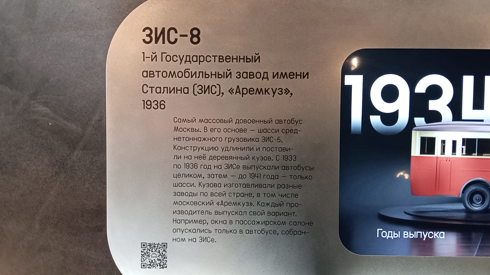
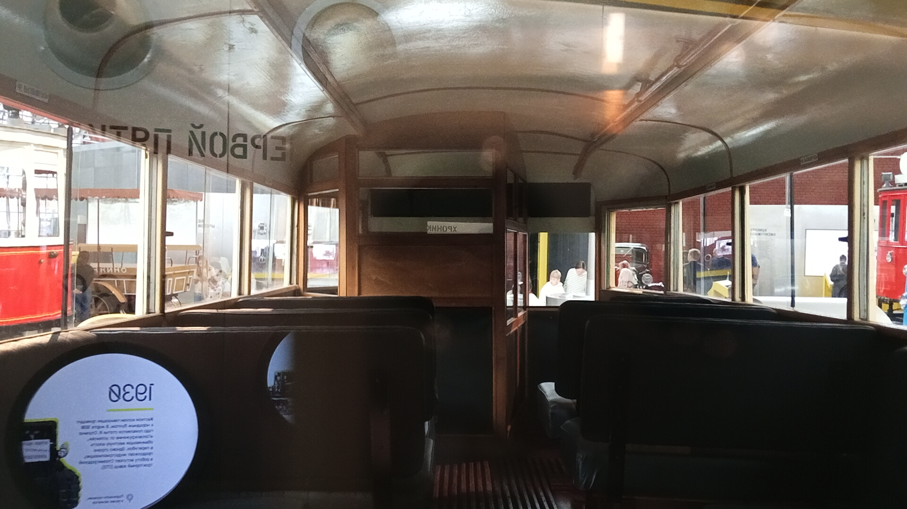

ЗИС-8
Перед вами музейный экспонат — городской автобус ЗИС-8, выпущенный в 1936 году на 1-м Государственном автомобильном заводе имени Сталина. Это был самый массовый довоенный автобус Москвы.
В его основе лежит шасси среднетоннажного грузовика ЗИС-5, конструкцию которого удлинили и поставили на неё деревянный кузов. С 1933 по 1936 год на ЗИСе выпускали автобусы целиком, а затем (до 1941 года) — только шасси, которые отправляли на другие заводы для установки кузовов.
Общая информация
🏭 Производство
Завод: 1-й Государственный автомобильный завод им. Сталина (ЗИС)
Год выпуска экспоната: 1936
База: шасси грузовика ЗИС-5
Период выпуска: 1933–1941 (сначала целиком, затем только шасси)
📍 Музейный статус
Местонахождение: Музей Транспорта Москвы
Состояние: Не эксплуатируется (музейный экспонат)
Особенность: Окна в салоне опускаются, что было характерно только для машин, собранных на самом ЗИСе.
Назначение: Историческая экспозиция
Технические характеристики
Основные параметры
Вместимость: 29 мест (полная)
Компоновка: переднемоторная, заднеприводная
Двигатель: ЗИС-5, бензиновый
Цилиндры: 6, рядный
Конструкция
Кузов: деревянный каркас с металлической обшивкой
Пол: деревянный
Сиденья: неразделённые, деревянные
Кабина водителя: отделена от салона
Двери: ручные, с опускающейся ручкой
История экспоната
Полное производство на ЗИСе
С 1933 по 1936 год на заводе ЗИС выпускали автобусы целиком, включая кузова. В основе лежало удлинённое шасси грузовика ЗИС-5.
Выпуск экспоната
Именно этот экземпляр был собран на ЗИСе в 1936 году. На нём сохранилась уникальная деталь — окна в пассажирском салоне опускаются (в отличие от версий, собиравшихся на других заводах, например, на «Аремкузе»).
Выпуск только шасси
После 1936 года на ЗИСе выпускали только шасси. Кузова изготавливали различные заводы по всей стране (включая московский «Аремкуз»), и каждый производитель делал свой вариант исполнения.
Музейный экспонат
Автобус бережно сохранён и представлен в экспозиции Музея Транспорта Москвы. Внутри воссоздан исторический облик: деревянный пол, неразделённые сиденья, изолированная кабина водителя.
Фотогалерея

Общий вид экспоната.

Музейная информация.

Деревянный пол и сиденья.
Нажмите на фото для увеличения
«Этот автобус, несмотря на свой неказистый вид (а может, и благодаря ему), вывозил на своих плечах и шестицилиндровом моторе практически все пассажирские маршруты СССР».